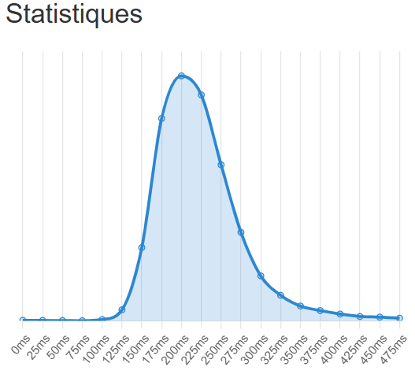

Ce jeu est un simple outil de mesure de votre temps de réaction.
Le temps de réaction médian est de 273 ms d'après les données collectées par humanbenchmark.com.
Cependant, il est important de préciser que ce test, dû à sa précision, est affecté par la latence de votre matériel.
Utiliser un matériel avec peu de latence augmentera sensiblement votre score.